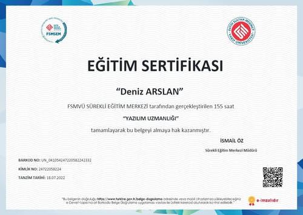

Neos Yazılım Akademinin İstanbul, Ankara ve İzmir şubelerinde yüz yüze ve tercih edenler için uzaktan eğitim seçenekleriyle gerçekleştirdiği Yazılım Uzmanlığı eğitimleri Front End Web Geliştirme ile başlayarak Back End Web Geliştirme eğitimlerini kapsamaktadır. Eğitim sürecinde toplam 9 önemli yazılım projesi geliştirerek yazılım kariyerinize güçlü bir özgeçmiş ile başlamanız sağlanır. Toplamda 314 saati kapsayan eğitimlerimiz aşağıdaki avantajlarıyla Türkiye'deki lider yazılım akademisi konumundadır. Bu avantajlar:
Sınırsız mentörlük
Kesintisiz eğitmen-katılımcı iletişimi
Sürekli gelişim takibi
Eğitim sonunda 1.5 ay staj
Staj sonunda mülakat ve yeterlilik düzeyini yakalamış olanlar için hızlı işe alım
Biliyor muydunuz?
Akademimiz %98 memnuniyet oranı ile Türkiye'nin en güvenilir
Yazılım Eğitim Kurumu konumundadır.. Bu bilgiyi doğrulamak için google
yorumları'na göz atabilir veya bizden eğitim alan bir arkadaşınıza
danışabilirsiniz.
Sertifikalar

×
Biliyor muydunuz? Neos Yazılım Akademi 2022 yılı Türkiye Prestij ödülü kapsamında 'Yılın En İyi Yazılım Akademisi' ödülüne sahiptir.
Müfredat
Detaylı müfredat bilgisi için bizleri 02129124090 numaralı hattımızdan arayabilirsiniz. Müfredatın genel içeriğine göz atmak için aşağıdaki kısmı inceleyebilirsiniz.
Yazılım Uzmanlığı eğitim müfredatımız toplamda 4 kısımdan oluşmaktadır.
1.Kısım: Fornt End Web Geliştirme
Bu kısımda yazılım dünyasına ilk adımımızı web geliştirme ile atıyoruz. Bu kısımda bir web sitesinin kullanıcı tarafını kodlamayı aşağıdaki diller ve kütüphaneler ile öğreniyoruz:
HTML ve CSS
JAVASCRIPT
BOOTSTRAP
JQUERY & JQUERY UI
REACT JS
2.Kısım: Back End Web Geliştirme
Bu kısımda dünyanın en popüler dili olan Python ve en güvenli web framework'ü olan Django Framework öğretilmektedir:
PYTHON & DJANGO
C# & .NET
3.Kısım: Sektör Simülasyonu
Türkiye'de yalnızca Neos Yazılım Akademi bünyesinde uygulanan "sektör simülasyonu" ile katılımcılarımız staj öncesinde yazılım sektörünü tanımaya başlamaktadır. Bir yazılımcının iş başvurusundan itibaren işe başlayana kadarki süreçte hangi aşamalardan geçtiğini bizzat deneyimleyen katılımcılarımız, bu bölümde Neos Yazılım Akademi tarafından sektörü tanıyan katılımcılarımız staj sürecine hazır hale gelirler.
4.Kısım: Staj Süreci
Neos Yazılım Akademi'de gerçekleştirilen stajlar sektörel eğitim kapsamında olup, katılımcıların ilk iş deneyimini kazanmasını sağlamaktadır. Staj sürecinde pek çok gerçek proje üzerinde çalışarak hem bireysel hem de takım çalışmaları gerçekleştirmektedir. Süreç departman şefi ve eğitmenler tarafından yürütülerek disiplin içerisinde en iyi sonucun elde edilmesini sağlar. Staj süreci 1.5 ay sürmekte olup, İstanbul ofisi, Ankara ofisi, İzmir ofisi veya online ortamda gerçekleştirilebilmektedir.
Müfredatımız; Çoğunluğu bilgisayar ve yazılım mühendislerinden oluşan ekibimizin devamlı olarak Harvard Üniversitesi, MIT ve Stanford Üniversitesinin bilgisayar bilimleri müfredatları incelenerek güncel tutulmaktadır. Bu nedenler Neos Yazılım Akademi Türkiye'nin en iyi yazılım eğitimi müfredatını sunmaktadır.
Eğitim programına dahil olan dil ve framework'ler dünyanın her yerinde yüksek talep gören teknolojilerden seçilmiştir. Müfredatımızı incelediğinizde web geliştirme alanında yüksek güvenlikli Django framework ile tüm dünyada en çok tercih edilen programlama dillerinden olan Javascript ve Python programlama dillerine yer verdiğimizi görebilirsiniz.
Web Geliştirme eğitimlerinin sonrasında öğretilen mobil uygulama geliştirme bölümünde ise Dart dili ile birlikte Google tarafından geliştirilmiş olması sebebiyle çokça talep gören Flutter'a yer vermekteyiz.
Eğitmenlerimiz yalnızca ders ve etüt saatlerine ek olarak mesai saatleri içerisinde sizlerle özel olarak ilgilenmektedir. Tüm sorularınız vaktinde cevaplanmaktadır.
iKurumumuz eğitmenlerinin bilgi ve yetenek seviyesinin anlaşılması adına işe alım süreçlerinden bahsetmek yerinde olacaktır. Neos Yazılım Akademi eğitmen seçiminde 3 kritere çok önem vermektedir:
Eğitmen adayı çağın gerekliliklerini karşılayarak kendini güncel kılabiliyor mu?
Eğitmen adayının geçmiş projelerindeki kodlama düzeni doğru mimari ile kurulmuş mu?
Eğitmen adayı kendini ifade edebilmek ve katılımcıyı anlayabilmek konusunda yetkinlik sahibi mi?
Aday bu kriterleri karşıladığı takdirde 3 aşamalı mülakat sürecine başlanır. Mülakatların 3.aşamasını da başarıyla tamamlayan adayların yazılım departmanındaki görevi başlar. Bu aşamadan sonra 1-3 ay süreyle Neos Yazılım Akademi'nin öğretim metodları ve kurum kültürüne uyumluluk süreci gerçekleşir. Eğitmen, tüm süreci başarıyla tamamladıktan sonra bir sınıfa atanarak sizlerle buluşur.
Evet. Her profesyonel günün birinde sıfırdan başlamıştır. Sıfırdan başlayan kişiler adına önemli olan doğru eğitim metoduyla ilerlemektir. Neos Yazılım Akademi bu konuda son derece profesyoneldir.
Evet. Eğitim süreleri yüksek seviyede bilgi ve tecrübe sahibi ekibimiz tarafından belirlenmektedir. Bu noktada bir eğitimin süresini yalnızca ders süresiyle değil, aynı zamanda etütler, staj ve ödevlere ayrılan süreyle göz önüne almak gerekir. Neos Yazılım Akademi'nin uzun süredir başarıyla yürüttüğü eğitim programlarının mezunlarının başarısı göz önüne alındığında eğitim süresinin yeterli olduğu görülmektedir.
Kurumumuz hakkında yapılan yorumlara
buradan ulaşabilirsiniz.
Eğitim sürecinde %80 oranında başarı elde eden katılımcılarımızı kendi bünyemizde görevlendirmek üzere değerlendirmeye alıyoruz.
Başarı kriterlerini karşılayan katılımcılarımız eğitim sonunda "Fatih Sultan Mehmet Üniversitesi Onaylı e-devlette sorgulanabilir sertifika", "ICCW Uluslararası sertifika" ve "Neos Yazılım Akademi sertifikası" almaya hak kazanmaktadır.
Neos Eğitim Bilişim Danışmanlık ve Ticaret Anonim Şirketine aittir. Şirkete ait resmi belgeleri görüntülemek için tıklayınız.
Tüm eğitimler taahhüt edilen tarihte başlamaktadır.
Eğitim kalitesinin garantisi vardır. Eğitimlerine düzenli katılıp eğitimin gereklerini yerine getiren her katılımcımız eğitim sonunda veya eğitim sürecinde yüksek standartlarda çalışmaya başlamıştır. Dürüst ilkelerle çalışan hiçbir eğitim kurumu sonucu size bağlı olan bir değişken üzerinden garanti vermez.
15 yaşın altındakiler için uygun değildir. Bununla birlikte herhangi bir üst sınır bulunmamaktadır.
Her meslek grubu ve yaştan katılımcılarımız mevcuttur. Yaş aralığı çok geniş olmakla birlikte sınıfınızdaki diğer katılımcıların meslekleri de çok çeşitli olacaktır. Sınıf arkadaşınız bir üniversite öğrencisi, doktor, iş insanı veya bir ev hanımı olabilir.